Поле, небо і смуга дерев між ними. У цій картині немає жодного обʼєкта, який треба вміти малювати — я створила пʼять уроків, де показаний кожен рух крейди.
Після оплати ви одразу потрапите в Telegram-бот. Перший урок прийде вже через 5 хвилин.
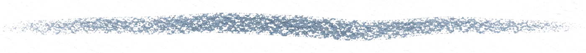
Долучайтесь до курсу до кінця таймеру, щоб забрати 2 подарунки
10:00бонуси зникають
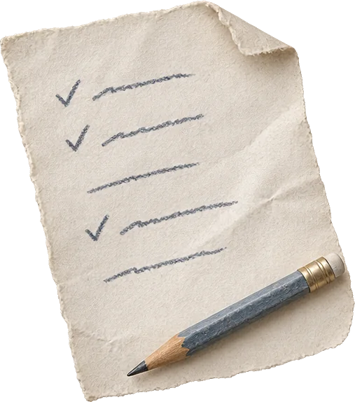
PDF
Бонус 1
Список матеріалів під три бюджети
Що саме купити: набір сухої пастелі, папір потрібного відтінку, клячка
Три варіанти бюджету — від найдешевшого набору до того, з яким працюю я сама
Назви брендів, орієнтовні ціни, за що варто доплатити, а за що ні
Навіщо це
Ви заходите в художній магазин зі списком у телефоні й виходите за 10 хвилин рівно з тим, що потрібно для цієї картини — без зайвого набору на кілька тисяч, який потім лежатиме без діла.
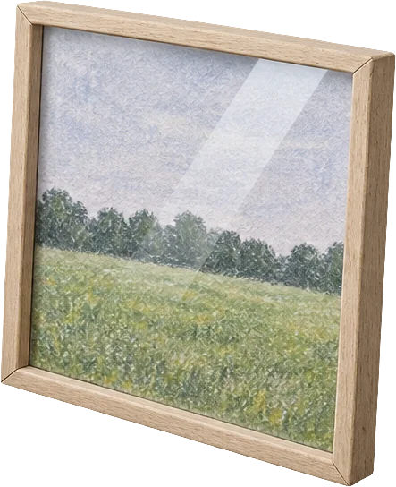
PDF
Бонус 2
Гайд «Як оформити картину пастеллю»
Як підібрати рамку під розмір і колір роботи
Навіщо між склом і пастеллю потрібен зазор
Скільки коштує готовий варіант і коли є сенс іти в багетну майстерню
Порада мистецтвознавця з понад 40-річним досвідом
Навіщо це
Ваша робота висить на стіні в рамці й виглядає як картина з галереї, а не як аркуш паперу, прикріплений скотчем.
Обидва бонуси зникають разом із таймером — далі міні-курс продається без них.
У цьому пейзажі немає нічого, що можна намалювати неправильно
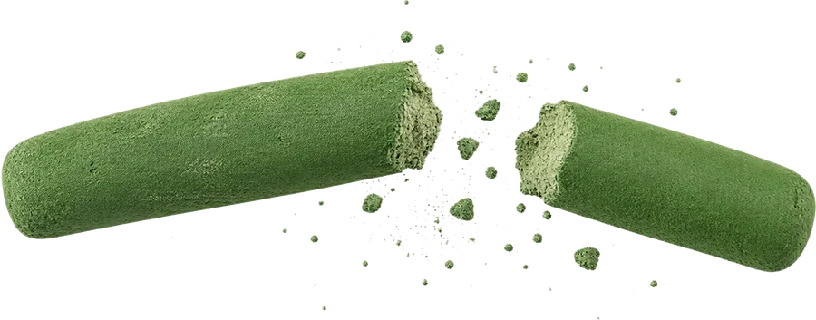
Більшість людей кидають малювання на першій же роботі — не тому, що не мають здібностей. А тому, що відразу намагаються зробити картину «правильною».
а раптом я зіпсую? 😨🫣
В атмосферному пейзажі цьому страху немає за що зачепитися. Поле не буває неправильним: воно буває світлішим, темнішим, більш жовтим або більш зеленим — і будь-який ваш варіант лишається полем.
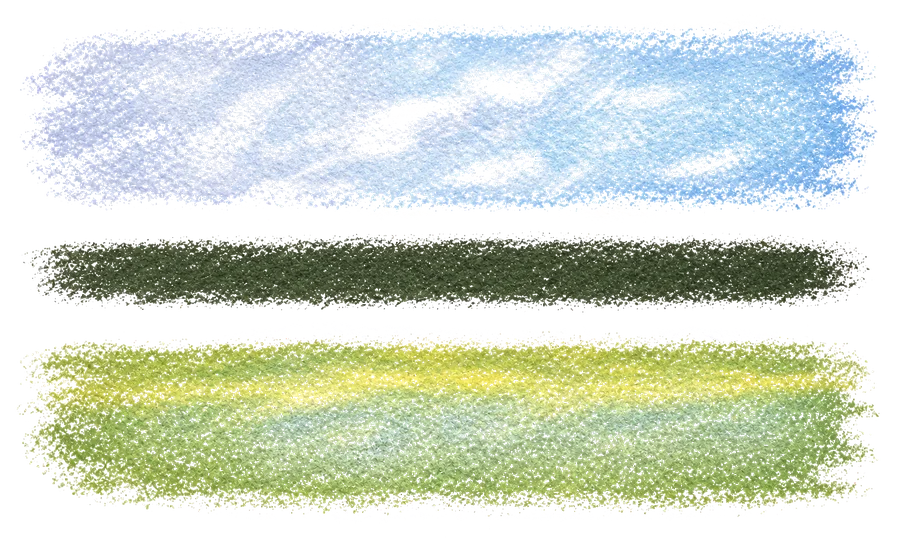
НебоСмуга деревПоле
Немає малюнка олівцем
Ви не будуєте композицію і не вимірюєте пропорції. На аркуші дві великі площини — небо і поле — та смуга дерев між ними. Крейду ви берете з першої хвилини.
Немає дрібних деталей
Смуга дерев пишеться однією темною масою, трава — кількома рухами, хмари — боковою стороною крейди. Виписувати тут просто нічого.
Не треба повторювати картину один в один
Ви вчитеся передавати колір, світло й повітря, але ваша робота може мати власні відтінки й власний настрій.
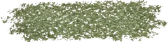
Невеликий формат знімає страх чистого аркуша
Великий аркуш вимагає плану, часу і сміливості. А маленький формат дозволяє швидко і в задоволення створити свій особистий шедевр.
І при цьому робота не виглядає як звичайний малюнок. Ви створюєте авторський пейзаж, який не соромно повісити у вітальні й показати гостям.
Олена Кулик Діріл
Фото Олени потрібен файл
25+персональних виставок
20+країн у колекціях
24роки з пастеллю
Я професійна художниця, в мистецтві з дитинства, донька української художниці Олени Кулик. Мої персональні виставки проходили в Україні, Італії, Німеччині та Туреччині, зокрема в дипломатичних установах. Я працюю сухою пастеллю та олією, але саме пастель лишається моєю головною технікою: це прямий контакт із папером через пальці, без інструмента-посередника.
Чому саме я
Я бачу одну й ту саму історію в кожної людини, яка приходить до мене з бажанням малювати. Колись у дитинстві хтось сказав їй, що нічого не вийде. Учителька, батьки, хтось із родини. Людина повірила і не бралася за пастель тридцять років.
Мене це дратує більше за все інше в цій професії. Тому я зібрала свій спосіб малювати атмосферний пейзаж у пʼять уроків, де показаний кожен штрих.
Я не обіцяю, що ви станете художником за один вечір
Я обіцяю, що після цих уроків чистий аркуш перестане вас лякати, а на стіні висітиме картина, яку ви намалювали своїми руками.
Мої роботи
Робота Олени 1
Робота Олени 2
Робота Олени 3
Робота Олени 4
Робота Олени 5
Робота Олени 6
Робота Олени 7
Робота Олени 8
Ви не будете малювати жодну з цих картин. На міні-курсі ми робимо одну конкретну роботу, простішу за всі, що ви бачите тут. Але складається вона з тих самих штрихів.
Все, що вам знадобиться для написання власної картини
Пастель, вона ж крейда та аркуш паперу.
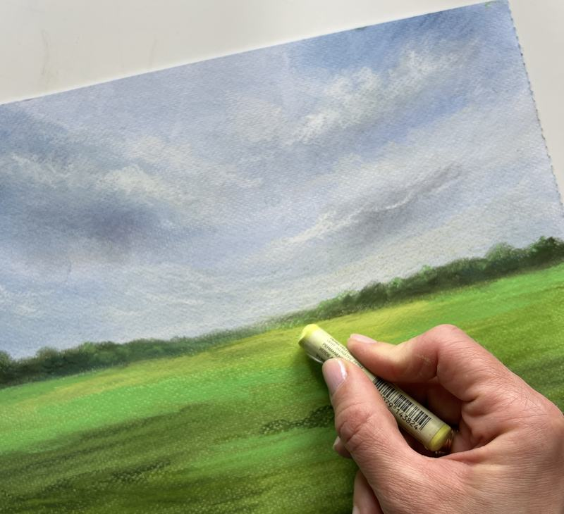
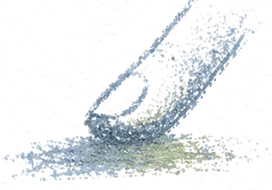
Між вами і папером немає інструмента
Колір кладеться боковою стороною крейди й розтирається пальцем. Пензлі, вода, палітра і розчинники тут не потрібні взагалі.
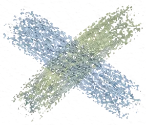
Кольори змішуються прямо на аркуші
Не треба вгадувати пропорції на палітрі й розводити фарбу до потрібної густоти. Поклали один колір поверх іншого, провели пальцем — і отримали відтінок.
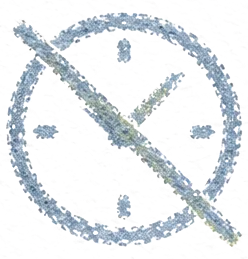
Нічого не сохне
Немає шарів, між якими треба чекати. Робота починається і закінчується за один сеанс.
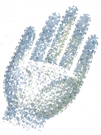
Нічого не треба драїти та відмивати
Пастель не пахне і не тече. Склали крейди в коробку — і за дві хвилини стіл вільний та чистий. Для очищення рук достатньо вологої серветки та води.
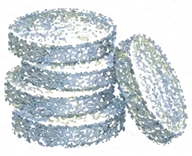
Стартовий набір коштує близько 600 грн
Крейди вистачить на десятки робіт, а другий аркуш паперу коштує 30 гривень.
Білого аркуша тут просто немає
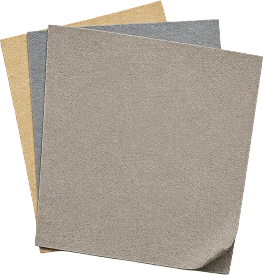
Найчастіша причина, чому набір для малювання лежить у шафі роками: людина боїться зробити перший штрих на чистому білому аркуші.
Пастель працює на кольоровому папері
Саме це дозволяє не боятись зробити той самий перший штрих.
01
Фон уже заданий за вас
Ви починаєте не з порожнечі, а з сірого, блакитного або пісочного аркуша, який сам по собі працює як колір неба або як тон поля. Частина роботи зроблена ще до першого штриха.
02
Помилка не фатальна
Невдалий штрих перекривається наступним шаром, зайве знімається клячкою. Папір тримає кілька шарів — я показую в уроці, скільки саме.
03
Перший рух — не лінія, а пляма
Ви кладете колір боковою стороною крейди широким рухом на пів аркуша. Тут неможливо провести криву лінію, бо ніяких ліній ви й не проводите.
Цей міні-курс для вас, якщо ви:
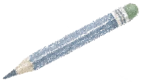
Ніколи не малювали нічим, крім олівця
Не знаєте, з чого почати і що взагалі купувати, і не впевнені, що маєте право називати це малюванням.
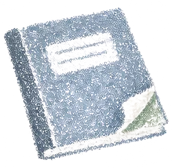
Малювали в школі, а потім кинули
Колись вам це подобалось. Потім хтось сказав, що виходить не дуже. Минуло тридцять років, а фраза досі памʼятається дослівно.
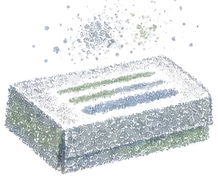
Купили матеріали — і вони лежать
Був порив: замовили набір, папір. Дійшло до того, щоб розкласти все на столі, — і на цьому зупинилось. Не через лінь, а тому що незрозуміло, з чого починати.
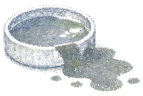
Пробували фарби — і розчарувались
Вода розтеклася не туди, кольори змішались у сіре, аркуш пішов хвилями. Ви вирішили, що малювання — не ваше.
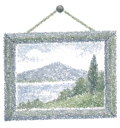
Хочете картину, яку зробили самі
Не постер із маркетплейсу, а роботу, про яку можна сказати: це моє. Або подарунок близькій людині, який ніде більше не купиш.
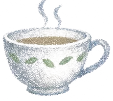
Хочете годину тиші в голові
Не медитацію і не курс із психології. Просто заняття, під час якого думки про роботу, новини й побут відступають самі — бо руки зайняті, а очі стежать за кольором.
Якщо впізнали себе хоча б в одному пункті — ця картина цілком вам під силу.
Пʼять уроків від чистого аркуша до готової картини
5 уроків + бонусний урок · домашнє завдання після кожного уроку · доступ у Telegram-боті на рік
▶кадр із уроку урок 1Урок 1
Як зібрати мінімальний стартовий набір: пастель і папір
які саме кольори потрібні для цієї картини і без яких можна обійтися
чим мʼяка пастель відрізняється від твердої і що з цього брати новачку
який папір тримає пастель, а з якого вона осипається за тиждень
чому колір паперу — це вже частина картини, і який відтінок брати під поле і небо
Результат: Витратите мало, отримаєте максимум матеріалів та задоволення. Жодних зайвих покупок.
▶кадр із уроку урок 2Урок 2
Наносимо пастель моїм авторським методом, щоб картина виглядала справді живою
три способи покласти колір: бокова сторона крейди, кінчик, розтирання пальцем
як змішувати кольори просто на папері, без палітри й без води
скільки шарів витримує папір і в якому порядку їх класти
як не змастити рукою те, що вже намальовано
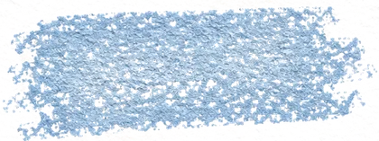
боком крейди
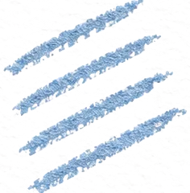
кінчиком
пальцем
Результат: Зникає обережний дрібний штрих, від якого роботи новачків виглядають блідими й затертими. Замість нього зʼявляється широкий впевнений рух, і колір лягає щільно й соковито.
▶кадр із уроку урок 3
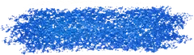
Урок 3
Крок за кроком створимо хмари та небо
де провести лінію горизонту на аркуші і чому саме там
як закласти небо великими рухами за кілька хвилин
де в хмарі світло, а де тінь, і як зробити її обʼємною
чому хмари ніколи не малюють по контуру
Результат: Більша частина аркуша вже зайнята небом. Ви дивитесь на власні хмари й бачите, що вони вийшли обʼємними, — а саме хмар початківці бояться найбільше.
▶кадр із уроку урок 4Урок 4
Малюємо поле так, щоб додати пейзажу глибини і повітря
як написати смугу дерев на горизонті однією масою, не малюючи жодного дерева
як колір поля змінюється від горизонту до переднього плану
де покласти світлу пляму, щоб у картині зʼявилося сонце
один прийом повітряної перспективи, після якого зʼявляється відстань між вами і горизонтом
Результат: Замість двох кольорових смуг на аркуші зʼявляється простір, у який хочеться зайти. Картина закінчена і готова до рамки вже на цьому уроці.
▶кадр із уроку урок 5
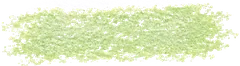
Урок 5
Як кількома штрихами оживити роботу і зробити її справді унікальною та особливою
фінальні акценти: трави на передньому плані, світлові плями, контраст
як подивитися на роботу свіжим оком і побачити, чого їй не вистачає
як зрозуміти, що час зупинитися, і не «залюбити» картину до бруду
як зафіксувати пастель, щоб вона не осипалася
Результат: Саме тут студенти пишуть: «Не вірю, що це намалювала я!»
▶кадр із уроку бонусний урокБонусний урок
Як оформити пастель, щоб вона виглядала як робота з галереї
чому пастель зберігають під склом і що буде, якщо цього не зробити
готова рамка проти багетної майстерні: коли який варіант має сенс
навіщо між склом і роботою потрібен зазор
порада мистецтвознавця з понад 40-річним досвідом, яку я свого часу отримала сама
Результат: Картина займає своє місце на стіні у вітальні, а не лежить у папці на шафі.
Після кожного уроку ви отримуєте коротке домашнє завдання. Якщо щось не виходить — пишете мені й отримуєте відповідь.
Після оплати ви одразу потрапляєте в Telegram-бот. Перший урок приходить наступного ранку, далі щодня ще по одному. Жодних платформ із паролями і зайвих застосунків.
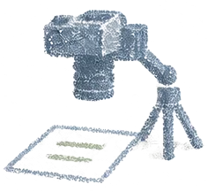
Відео, де видно кожен штрих
Я ставлю камеру над аркушем, тому видно руку, нахил крейди й те, як колір розтирається пальцем. Ви ставите на паузу, повторюєте свій штрих і йдете далі у власному темпі.
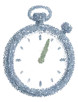
Уроки до 10 хвилин
Жодних лекцій на годину. Кожне відео — це конкретний етап картини, який ви повторюєте одразу після перегляду.
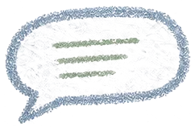
Пояснення простими словами
Без термінів, які треба окремо розшифровувати. Я пояснюю так, ніби сиджу поруч за вашим столом: візьміть цю крейду, покладіть ось так, розітріть пальцем звідси сюди.
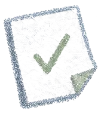
Домашнє завдання після кожного уроку
Коротке завдання закріплює те, що ви щойно подивилися. Якщо щось не виходить — пишете мені й отримуєте відповідь.
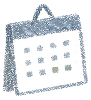
Доступ до уроків на цілий рік
Уроки лишаються в боті 12 місяців. Захочете намалювати другу картину через півроку — просто відкриєте бот і передивитесь потрібний урок.
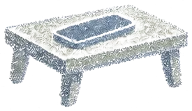
Телефон і стіл
Більше нічого для навчання не потрібно. Планшет, компʼютер, окрема кімната й мольберт тут не знадобляться.
За пʼять уроків ви:
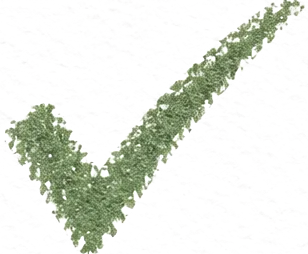
Намалюєте атмосферний пейзаж пастеллю, навіть якщо тримаєте крейду вперше в житті
Дізнаєтесь, який набір пастелі й папір потрібні саме для цієї картини і на чому можна не переплачувати
Навчитесь класти колір трьома способами: боковою стороною крейди, кінчиком і пальцем
Зрозумієте, як змішувати кольори просто на папері, без палітри й води
Навчитесь писати хмари так, щоб вони виглядали обʼємними, а не плоскими плямами
Дізнаєтесь, як однією темною масою написати смугу дерев, не малюючи жодного дерева
Навчитесь передавати глибину: від далекого поля біля горизонту до трави на передньому плані
Зрозумієте, у який момент картину треба залишити в спокої
Оформите роботу під скло й повісите на стіну картину, про яку скажете: це моя робота
Роботи моїх студентів
Робота студента 1
Робота студента 2
Робота студента 3
Робота студента 4
Робота студента 5
Робота студента 6
Робота студента 7
Робота студента 8
Кожну з цих робіт зробила людина, яка колись сказала собі «я не вмію малювати». Сюжет один і той самий, а картини різні: у когось небо світліше, у когось поле йде в жовтий, у когось хмари важчі. Так і має бути — я не вчу копіювати мою роботу.
Роботи опубліковані з дозволу авторів.
Що кажуть ті, хто вже пройшов уроки
Скріншот відгуку 1
Скріншот відгуку 2
Скріншот відгуку 3
Скріншот відгуку 4
Скріншот відгуку 5
Що потрібно купити для цієї картини
Ми не приховуємо цифри до оплати: малювання вимагає матеріалів, і ви маєте знати про це до того, як натиснете кнопку.
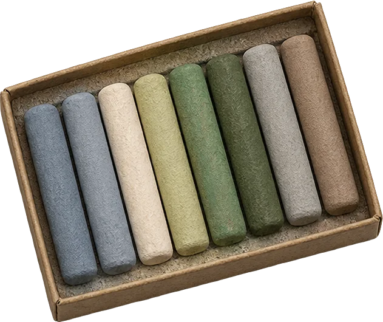
Суха пастель, 24 кольори
Той тип пастелі, з яким я працюю в уроках.
450від, грн
Папір для пастелі
Кольоровий, із фактурою, яка тримає крейду.
27аркуш, грн
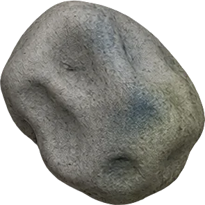
Клячка
Мʼяка гумка, якою знімають зайвий шар пастелі.
50близько, грн
≈600 грнстартовий набір — і це все, що потрібно для роботи
600 гривень — це не витрати на одну картину. Набір крейд не закінчується за вечір, його вистачить на десятки робіт. Друга картина обійдеться вам у 30 гривень — стільки коштує новий аркуш паперу.
Точний список із назвами, цінами й трьома варіантами бюджету ви отримаєте одразу після оплати — це перший бонус курсу.
Повернення коштів
Я впевнена в якості цих уроків, тому даю 14 днів повної гарантії. Якщо протягом двох тижнів ви пройдете всі уроки, намалюєте свій пейзаж, але не побачите в ньому цінності або очікуваного результату, я без жодних питань поверну кошти.
Жодних ризиків. Або у вас на стіні зʼявляється ваша перша картина, або я повертаю гроші.
«У неї вийде намалювати пейзаж, вона ж художниця. А в мене ні?»
Це найчастіша думка, яка зупиняє людину перед покупкою будь-яких уроків малювання. Вона виглядає логічною: я в мистецтві з дитинства, провела 25 персональних виставок, мої роботи зберігаються в приватних колекціях 20 країн. Звісно, у мене виходить.
Тільки моє навчання влаштоване інакше.
01
Мій досвід потрібен для того, щоб вийшла ваша картина
Роки практики пішли на те, щоб розкласти цей пейзаж на кроки, які повторить людина без жодної підготовки. Саме тому кожен крок в уроках звучить конкретно: візьміть ці два кольори, покладіть ось так, розітріть пальцем звідси сюди. Вам не доведеться розшифровувати фразу «а тут просто відчуйте колір».
02
Ви не змагаєтесь зі мною
Ваша картина не має повторити мою. Небо вийде іншим за відтінком, хмари ляжуть по-своєму, горизонт стане на кілька сантиметрів вище. У кожного своє бачення, і це нормально. Саме тому картина і буде вашою.
03
Вам не треба нічого вигадувати
Найважче в малюванні — це рішення: що малювати, з чого почати, який колір узяти. На цьому міні-курсі всі рішення вже прийняті за вас. Сюжет обраний, кольори підібрані, послідовність кроків показана. Вам лишається робота руками, а вона виходить у всіх.
Готову роботу треба закрити склом — і про це варто сказати чесно
Пастель живе на папері, тому закінчену картину закривають склом: так вона не осиплеться і не зітреться. Це єдиний крок, якого немає в живописі на полотні, і я не буду вдавати, що його не існує.
Хороша новина в тому, що йти в багетну майстерню й чекати кілька днів не обовʼязково.
зазор
01
Готова рамка коштує від 180 грн
Рамка потрібного розміру зі склом продається у звичайному будівельному гіпермаркеті або на маркетплейсі. Це та сама сума, яку ви витрачаєте на дві кави, і той самий вечір, коли робота вже висить на стіні.
02
Багетна майстерня — за бажанням, не за потреби
Індивідуальний багет під розмір коштує дорожче й робиться кілька днів. Він має сенс, коли ви вже впевнені, що робота варта такої оправи. Для першої картини готової рамки досить.
03
У бонусному уроці я показую, як зробити це правильно
Який зазор потрібен між склом і пастеллю і навіщо, як підібрати колір рамки під колір роботи, на якій висоті вішати. Так робота виглядає закінченою, а не «поки що так».
Повний список усього, що ви отримаєте
5 практичних уроків з малювання атмосферного пейзажу пастеллю
Бонусний урок про оформлення роботи під скло
Покрокова методика, де показаний кожен штрих
Домашнє завдання після кожного уроку
Бонус 1. Список матеріалів під три бюджети з цінами
Після оплати ви одразу потрапите в Telegram-бот. Перший урок прийде наступного ранку.
10:00бонуси зникають разом із таймером
Часті запитання
Чому так дешево? У чому підступ?
Підступу немає. Це короткий міні-курс на пʼять уроків, а не велика програма на кілька місяців. Плюс я тестую цю ціну на новому запуску. Далі вона буде іншою.
Я взагалі ніколи не малював(ла). У мене вийде?
Так, і саме для таких людей цей сюжет і обраний. У цьому пейзажі немає жодного обʼєкта, який треба вміти малювати: ні людей, ні будинків, ні тварин. Є небо, поле і смуга дерев між ними. Ви не будуєте композицію олівцем і не рахуєте пропорції.
Мені 55. Не пізно починати?
Ні. У малюванні немає віку, після якого вже пізно. Тут не потрібні ні швидка реакція, ні сила в руках, ні гострий зір. Потрібні година часу й бажання спробувати.
Чим пастель відрізняється від фарб? Це складніше?
Простіше. У пастелі немає пензлів, води, розчинників і палітри: ви кладете колір крейдою і розтираєте пальцем, а змішуються кольори прямо на папері. Немає й пауз на висихання — картину можна закінчити за один сеанс.
Скільки коштують матеріали?
Близько 600 гривень: набір сухої пастелі й папір. Це витрати не на одну картину — крейд вистачить на десятки робіт. Другий аркуш коштує 30 гривень. Точний список із трьома варіантами бюджету ви отримаєте одразу після оплати.
Чи можна почати без усіх матеріалів?
Перший урок ви подивитесь без пастелі — він саме про те, що і де купувати. Але до другого уроку набір уже має бути на столі.
Чи не осиплеться пастель із паперу?
Не осиплеться, якщо взяти правильний папір і закінчену роботу закрити склом. І про папір, і про фіксацію я розповідаю в уроках, а оформленню присвячений окремий бонусний урок.
Чи обовʼязково купувати рамку?
Малювати можна без неї, а от зберігати роботу краще під склом: так пастель не зітреться. Готова рамка потрібного розміру коштує від 180 грн у звичайному гіпермаркеті — багетна майстерня для першої картини не обовʼязкова.
Скільки часу займе весь міні-курс?
Уроки приходять по одному щоранку. Сама картина малюється приблизно за 60 хвилин.
Я вже малюю аквареллю. Мені підійде?
Підійде. Пастель — зовсім інша техніка, і навіть люди з досвідом фарб на початку розгублюються: тут немає ні води, ні пензля, ні палітри. Я показую ключові відмінності й прийоми, яких в інших техніках просто не існує.
Де проходить навчання?
У Telegram. Після оплати ви одразу потрапляєте в бот, перший урок приходить наступного ранку. Нічого встановлювати не потрібно.
Скільки часу зберігається доступ?
Рік. Захочете повернутися до уроків через півроку — просто відкриєте бот.
Що робити, якщо щось не виходить?
Напишіть мені в підтримку, і я відповім.
А якщо мені не сподобається?
Протягом чотирнадцяти днів напишіть у підтримку одне повідомлення, і я поверну кошти повністю. Без анкет і без пояснень.